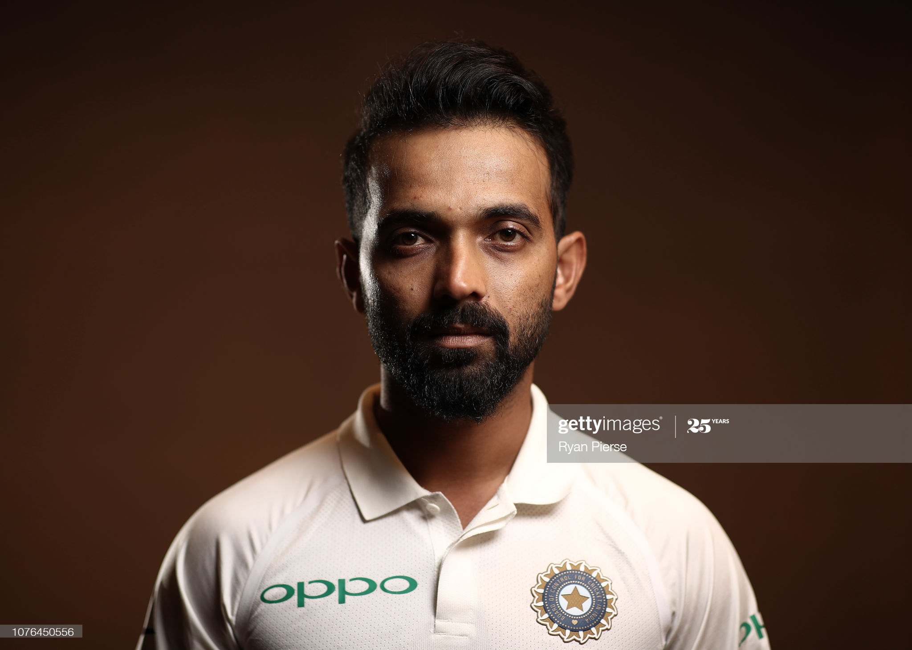

Ajinkya Rahane

Wikipedia says:
Ajinkya Madhukar Rahane (born on 6 June 1988) is an Indian cricketer. He plays primarily as a middle-order batsman in the Test format and as a top-order batsman in white-ball forms of the game. He is currently the vice captain of the Indian cricket team in Test cricket.
Rahane made his first-class debut in 2007–08 season for Mumbai and averaged an impressive 77.04 after 100 innings. He scored over 1500 runs three times in his first five seasons. He made his international debut in a Twenty20 International against England at Manchester in August 2011. With batsman Shikhar Dhawan injuring his fingers, Rahane made his Test debut in the March 2013 Border–Gavaskar Trophy. His first Test century came at Basin Reserve, Wellington against New Zealand.[3] Rahane scored his 10th hundred against West Indies on 25 August 2019 in a tough situation to win India by 318 runs. Rahane was named player of the match by scoring 184 runs including a century and half century.